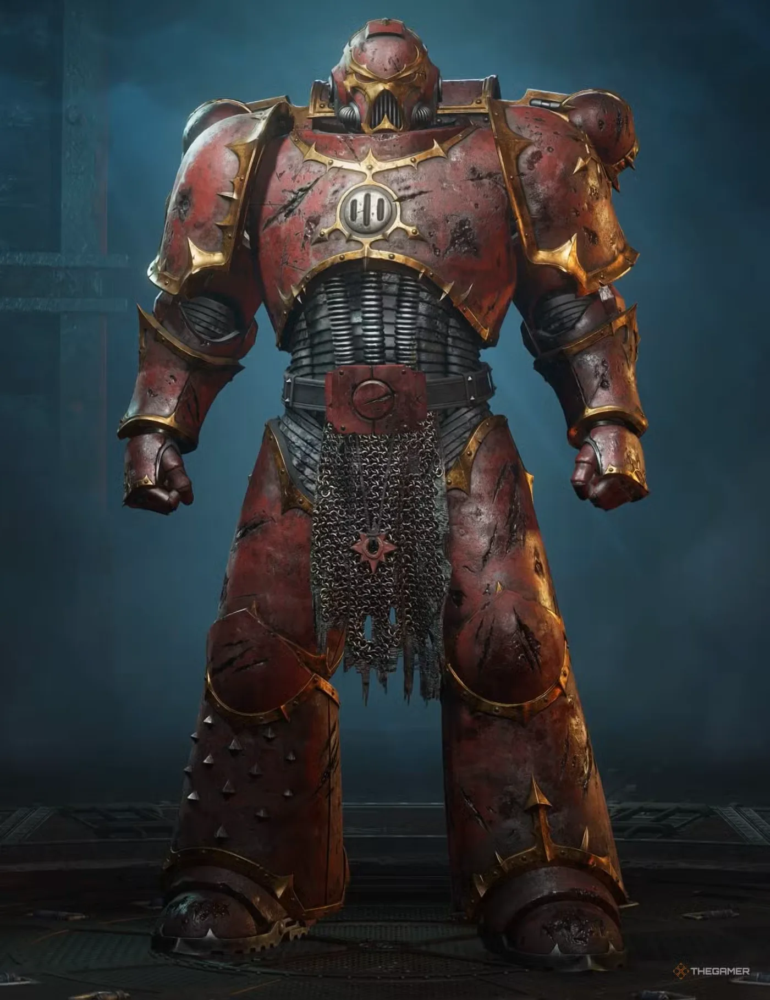
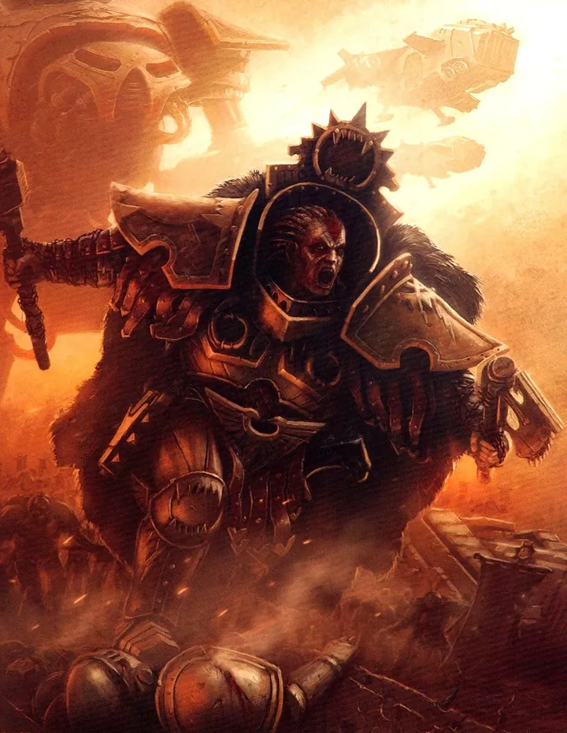
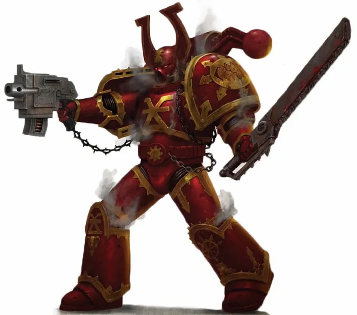
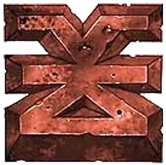
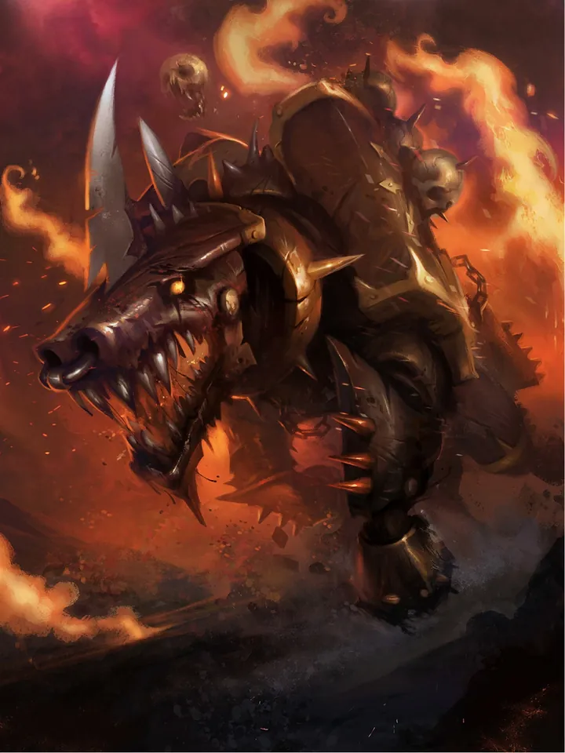
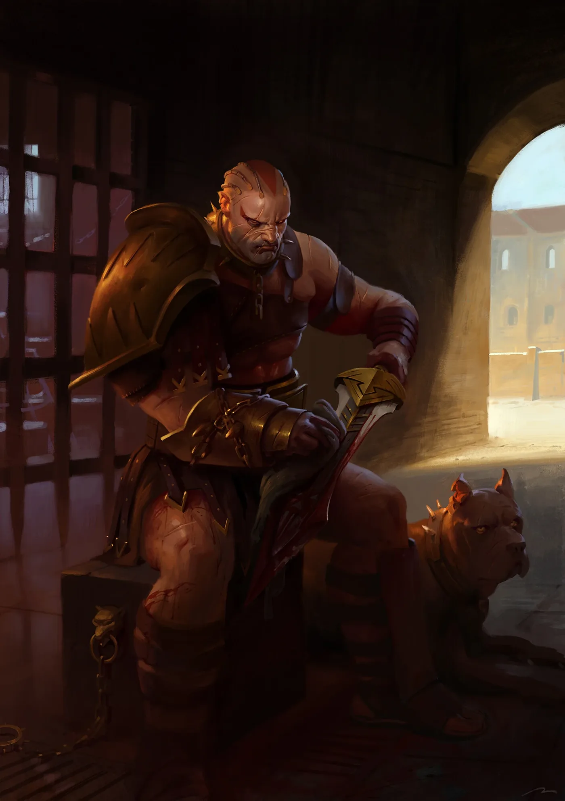

01ภาพรวม

เลือดเพื่อเทพเจ้าแห่งเลือด! — นักรบคลั่งที่มีชีวิตอยู่เพื่อเข่นฆ่า
02ต้นกำเนิด
Legion ที่ 12 ภายใต้ Angron (เดิมชื่อ War Hounds) ทหารฝังอุปกรณ์ Butcher's Nails ในสมองตาม Primarch และตกเป็นของ Khorne ระหว่าง Heresy
03เนื้อเรื่องเจาะลึก
Nuceria และความแค้นต่อจักรพรรดิ
Angron ถูกขายเป็นทาสกลาดิเอเตอร์บนดาว Nuceria เขานำทาสหลบหนีและกำลังจะตายในการต่อสู้ครั้งสุดท้าย แต่จักรพรรดิมาพาเขาออกไปก่อน ทิ้งเพื่อนทาสให้ตาย Angron ไม่เคยให้อภัย และเกลียดจักรพรรดิมาตลอด
War Hounds กลายเป็น World Eaters
เดิม Legion ที่ 12 ชื่อ War Hounds เมื่อ Angron มา ทหารเลียนแบบเขาด้วยการฝัง Butcher's Nails จนกลายเป็นนักรบคลั่งที่ Legion อื่นกลัว — และเป็นกองแรก ๆ ที่เข้าร่วม Horus
04ยุค 30K — ในยุค Great Crusade และ Horus Heresy

ยุค 30K ในชื่อ War Hounds เป็น Legion จู่โจมที่มีวินัย เมื่อ Angron มาถึงก็เปลี่ยนเป็นนักรบคลั่ง
ดูภาพรวมยุค 30K ทั้งหมดที่ เนื้อเรื่องยุค 30K และความต่างของสองยุคที่ เปรียบเทียบ 30K vs 40K
05นิสัยและวัฒนธรรม
- แทบไม่ใช้อาวุธยิง — Khorne ชอบให้เลือดหลั่งด้วยมือ
- เกลียดเวทมนตร์และผู้ใช้พลังจิต
- รวมตัวเป็นกลุ่ม 'Butcherhorde' ที่วิ่งตามศึก
06จุดที่น่าสนใจ
- Skalathrax: Khârn สังหารทั้งศัตรูและพวกเดียวกัน Legion จึงแตก
- ถ้า Angron ถูกขับกลับ Warp เขาจะกลับมาภายใน 8 สัปดาห์ 8 วัน 8 ชั่วโมง
07ความสามารถพิเศษ
สิ่งที่ทำให้ World Eaters แตกต่างจากทัพอื่น — ทั้งพลังที่ติดตัวมาทั้งเผ่า/ทัพ และความสามารถของบุคคลสำคัญ
ของทั้งเผ่า/ทัพ

Butcher's Nails
อุปกรณ์ฝังในสมองที่กระตุ้นความก้าวร้าว ทำให้รู้สึกความสุขได้จากการฆ่าเท่านั้น เมื่อไม่ได้ฆ่าจะเจ็บปวดทรมาน ทหารจึงคลั่งเลือดโดยธรรมชาติ

ปฏิเสธเวทมนตร์
Khorne เกลียดพ่อมดและผู้ใช้พลังจิต World Eaters จึงไม่มี Sorcerer และมองว่าการใช้ปืนเป็นเรื่องรองจากการฟาดฟัน

Blood for the Blood God
บูชาการฆ่าทุกรูปแบบ เก็บกะโหลกศัตรูถวายบัลลังก์กะโหลกของ Khorne ไม่แยกมิตรหรือศัตรูเมื่อคลั่งเต็มที่
ของบุคคลสำคัญ

Angron
Red AngelPrimarch ที่ถูกฝัง Butcher's Nails ตั้งแต่เป็นทาสกลาดิเอเตอร์ กลายเป็น Daemon Primarch ของ Khorne เคยถูกเนรเทศไป Warp หลายครั้ง และกลับมาในยุคปัจจุบันเพื่อบุก Terra อีกครั้ง

Khârn the Betrayer
ผู้ฆ่าทั้งสองฝ่ายบนดาว Skalathrax เขาเผาที่หลบหนาวของทั้งมิตรและศัตรูเพราะทนรอการรบไม่ไหว ทำให้ Legion แตกเป็นกลุ่ม ปัจจุบันยังคงฆ่าไม่เลือกหน้า
08หน่วยและบทบาทในกองทัพ
World Eaters คลั่งเลือดด้วยอุปกรณ์ Butcher's Nails ที่ฝังในสมอง ไม่มีเวทมนตร์และไม่ชอบปืน (Khorne เกลียดพ่อมด) กองทัพจึงเน้นบุกประชิดตัวอย่างเดียว

Lord on Juggernaut
ลอร์ดบนจักเกอร์นอตผู้นำที่ขี่สัตว์ปีศาจทองเหลือง Juggernaut ของ Khorne พุ่งเข้าชนแนวหน้า
Khorne Berzerkers
คอร์นเบอร์เซิร์กเกอร์ทหารหลักที่ถูกฝัง Butcher's Nails ทำให้รู้สึกความสุขได้จากการฆ่าเท่านั้น
Eightbound
เอตบาวด์นักรบที่ถูกปีศาจ 8 ตนสิงพร้อมกัน ร่างกลายเป็นสัตว์ร้ายที่มีกรงเล็บเลื่อยยนต์
Jakhals
จักฮาลทาสมนุษย์ที่ถูกฝังตะปูสมองเลียนแบบ ใช้เป็นแนวหน้ากำบังให้ Berzerkers

Master of Executions
มาสเตอร์ออฟเอ็กซ์ซีคิวชันนักล่าหัวผู้นำศัตรูเพื่อถวายบัลลังก์กะโหลกของ Khorne
หน่วยทั่วไปของ Chaos Space Marines (Sorcerer, Warpsmith, Dark Apostle ฯลฯ) ดูได้ที่ หน่วยและบทบาทของ Chaos Space Marines
09วีรกรรมและเหตุการณ์สำคัญ
Isstvan III
สังหารผู้ภักดีใน Legion
Skalathrax
Khârn ได้ฉายา 'ผู้ทรยศ'
Arks of Omen
Angron กลับมาบนยาน Conqueror บุก Kalkin's Tribune ต่อมาเกือบสังหาร Dante ที่ Idolatros ก่อนถูก Lion El'Jonson ขับกลับ Warp
10ตัวละครสำคัญ
Khârn the Betrayer
แชมป์แห่ง Khorneนักรบคลั่งที่อันตรายที่สุด

Angron
Daemon PrimarchThe Red Angel
11ยุค 40K — สหัสวรรษที่ 41
ยุค 40K World Eaters เป็นฝูงนักรบคลั่งที่กระจัดกระจาย แต่ละกลุ่มวิ่งหาสงคราม
12เนื้อเรื่องล่าสุด (Era Indomitus / M42)
เมื่อ Angron กลับมา Warband ต่าง ๆ ถูกดึงดูดมารวมตัวใต้ธงของเขาอีกครั้ง — แข็งแกร่งที่สุดนับตั้งแต่ Great Crusade
หลังการเกิด Great Rift ปฏิทินของจักรวรรดิคลาดเคลื่อน เหตุการณ์ยุคปัจจุบันจึงมักระบุเพียง 'M42' ไม่มีปีที่แน่นอน
13แกลเลอรี